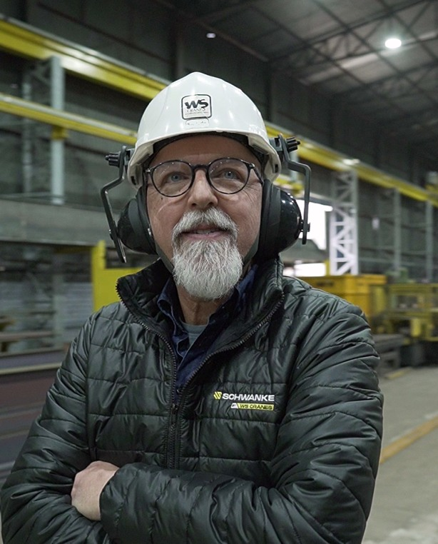
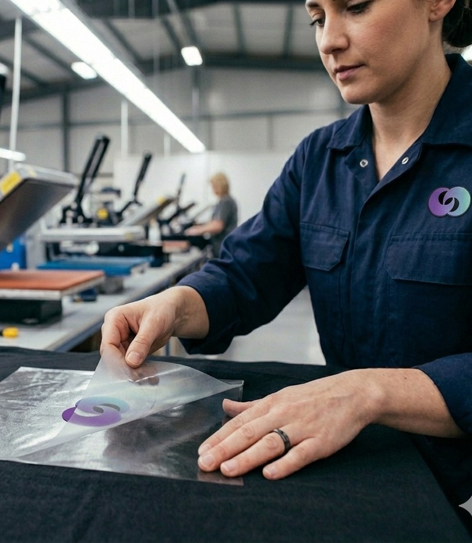
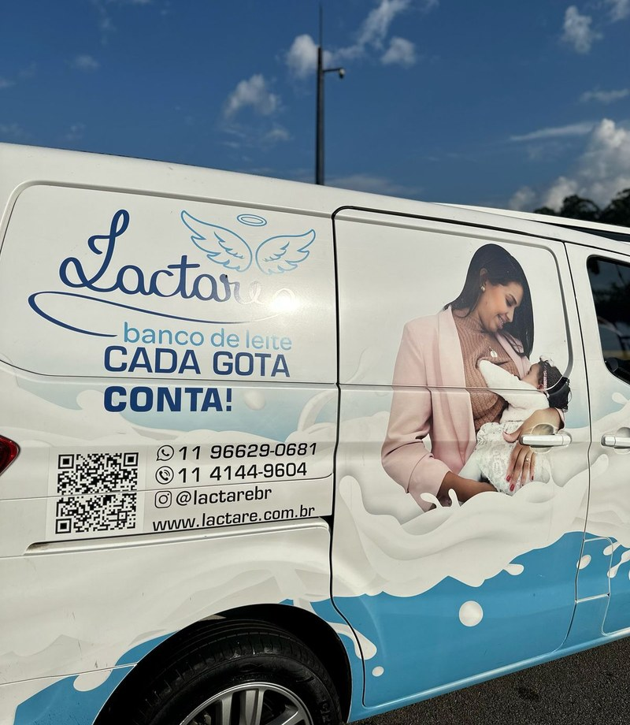
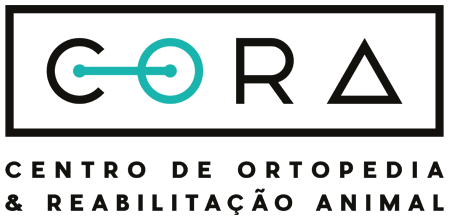
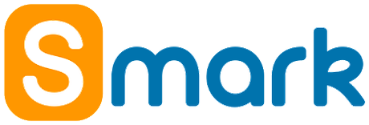
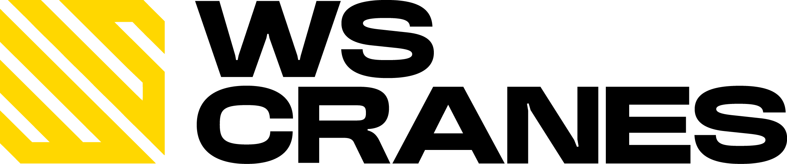
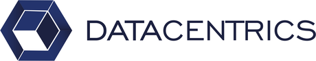
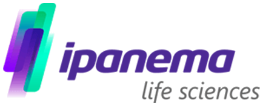
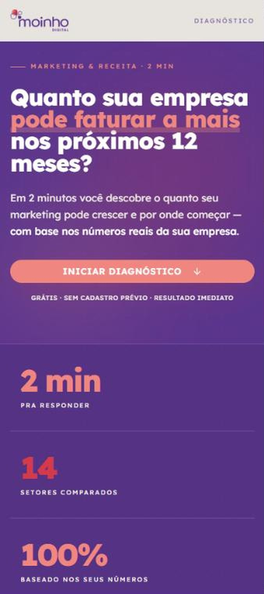

Time multidisciplinar
Estrategistas de comunicação, marketing e vendas, analistas, redatores, designers, especialistas em CS e especialistas em tráfego. Diferentes expertises pensando estrategicamente o crescimento do seu negócio.
A Moinho revisa e estrutura toda a arquitetura de receita, dando cadência à jornada do cliente: integrando Marketing, Vendas e Sucesso do Cliente para gerar crescimento sustentável e previsível.
RevOps · Operação de receita · Jornada do cliente
Nós analisamos e operamos a jornada do cliente de ponta a ponta: Marketing, Vendas e Sucesso do Cliente. É o que o mercado chama de RevOps (Operação de Receita). Com atenção diária, cadência semanal, revisão mensal e checkpoints trimestrais, te guiamos para que o crescimento deixe de depender de picos e passe a ser sustentado por rotina, critérios e melhoria contínua.
Passe o cursor ou toque em uma etapa para ver o que entra nela.
Ser encontrado por quem tem o problema que a sua empresa resolve.
Transformar audiência em oportunidade real de negócio.
Encurtar o ciclo e padronizar o que faz vender.
Levar o cliente ao primeiro resultado o quanto antes.
Proteger a base que já está dentro de casa.
Crescer dentro de quem já compra.
O que entregamos na prática
Porque a Moinho
Em dez anos atendendo mais de setenta marcas, quase todo cenário que chega até nós já apareceu antes de alguma forma. Isso encurta o caminho até colher os primeiros resultados, porque a estratégia não começa do zero, começa do que já funcionou e está medido.
Estrategistas de comunicação, marketing e vendas, analistas, redatores, designers, especialistas em CS e especialistas em tráfego. Diferentes expertises pensando estrategicamente o crescimento do seu negócio.
Cada entrega, direcionamento, campanha ou conteúdo sai de uma decisão de estratégia, com motivo declarado. Nada é produzido só para cumprir volume mensal.
Você acompanha todas as ações que foram feitas, o que foi investido, o que voltou e o que muda no próximo ciclo. Cada passo é definido em cima de resultados atingidos.
Você fala direto com quem executa, sem camada de intermediação. Rotina clara de aprovação, reunião com pauta e um canal aberto para o dia a dia.
Ecossistema Atlantar
A Moinho faz parte do Atlantar, ao lado da BD&Co, que cuida de branding e identidade, e da SPO, que cuida de tecnologia e IA. Dentro do ecossistema, somos o pilar de tração. Na prática, você resolve marca, tecnologia e performance no mesmo lugar, com fornecedores alinhados ao seu objetivo.
Moinho Digital
SPO Tecnologia
BD&Co. Studio
No que acreditamos
A Moinho existe para colocar a jornada de receita em ritmo.
O mercado geralmente celebra picos: uma campanha que funciona, um bom mês, um vendedor fora da curva. Isso dá sensação de avanço, mas a sensação não sustenta o caixa. O que sustenta é a cadência: uma operação que gira com consistência e melhora continuamente.
Não vendemos conteúdo, mídia, marketing ou vendas como fins. Isso são meios. O que entregamos é receita previsível ao integrar Marketing, Vendas e Sucesso do Cliente em uma única engrenagem: gerar demanda qualificada, converter com disciplina, reter e expandir a base.
Nós operamos em ciclos.
Porque o problema raramente é falta de esforço. É falta de método. Quando cada área opera isolada, a empresa até se movimenta, mas perde eficiência, alonga ciclos, encarece aquisição e fragiliza retenção. A pressão aumenta. O improviso vira rotina.
Todo dia um ajuste. Toda semana uma decisão clara sobre o principal gargalo. Todo mês, ajustes orientados por indicadores. Todo trimestre, alinhamento para escalar com controle. Menos pico, mais previsibilidade. Menos heroísmo, mais padrão.
Receita previsível não se promete. Se constrói em ciclos.
Moinho Digital. Cadência que vira receita.
Resultados reais · Cases
Ex-presidente da Azul e ex-CEO da Zara Brasil.

R$ 6 mi em vendas por canais digitaisIndústria gaúcha com 20 anos de mercado.
Braço social da farmacêutica
Eurofarma.

10× mais conversão em seis mesesTermocolantes e DTF têxtil para personalização, em todo o Brasil.

1 mi de visualizações no semestreProjeto do Grupo Eurofarma pela doação de leite humano.
Na palavra de quem contratou
Em 15 anos de mercado, nunca vi uma qualificação tão boa e um resultado tão assertivo. Já vi muito volume, mas qualificação assim não. Vendemos duas unidades do nosso lançamento já nos primeiros dois meses de trabalho. Isso foi um fato inédito na Dallasanta.
A Moinho é uma empresa pronta. Especialista e focada nos resultados dos seus clientes. A equipe de profissionais são super qualificados, o que traz segurança pra nós, clientes.
Time empenhado em entender as necessidades do cliente com foco nos resultados positivos! Continuem com essa garra e determinação, fazem a diferença no resultado e é perceptível pelo cliente.
O processo com a Moinho Digital tem sido muito gratificante. Eles não apenas entregaram resultados tangíveis, mas também demonstraram um nível de profissionalismo e dedicação que é raro encontrar.
Trabalho em conjunto com a Moinho há praticamente 2 anos e o resultado nunca parou de crescer. Sentimos que é como se fosse uma extensão da empresa, mesmo com a distância física.
A Moinho tem sido uma grande parceira na nossa estratégia de crescimento e comunicação com o mercado. Tem uma equipe muito dedicada e responsável sempre pronta para nos ajudar.
Começamos a trabalhar com a Moinho no início do ano e desde então temos recebido elogios e reconhecimento sobre como as redes sociais de nossa organização melhoraram.
Já no primeiro mês de parceria deu pra perceber que a pegada do pessoal é diferente. Sempre próximos à empresa, criando conteúdos com nossa participação e aprovação, gerando bons resultados.
Clientes





Diagnóstico gratuito
A ferramenta estima quanto de receita você deixa de faturar por não investir em estratégias de marketing e captação digital.

Contato
Responda o formulário abaixo ou nos chame no WhatsApp.